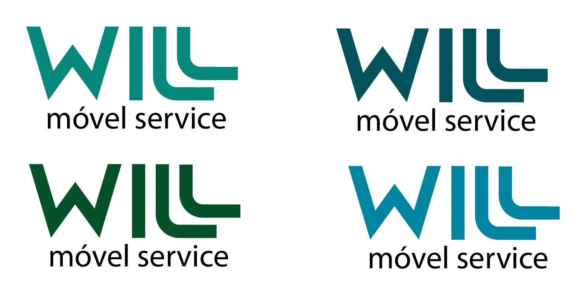
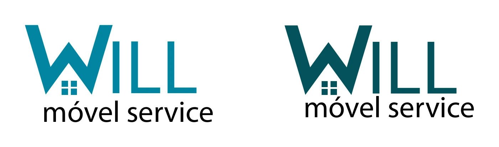
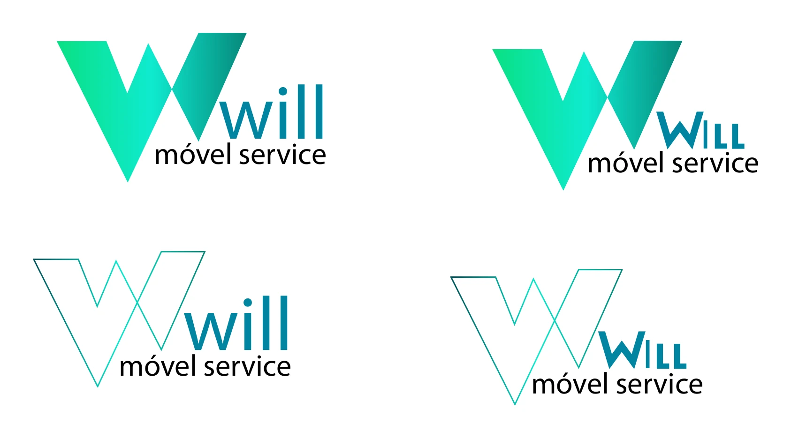
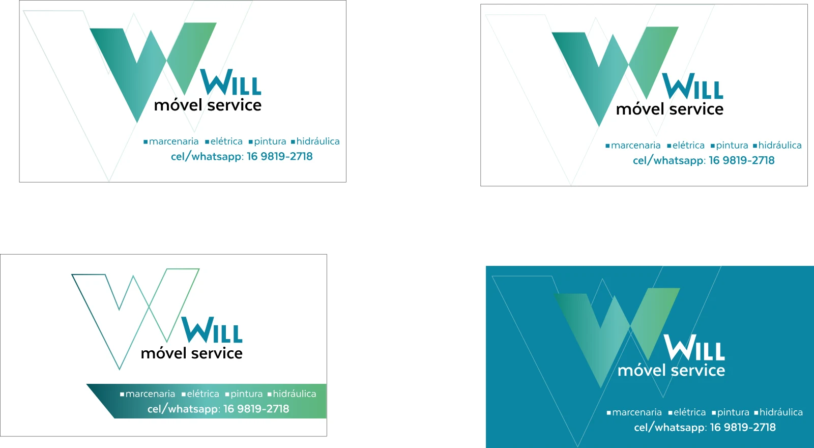
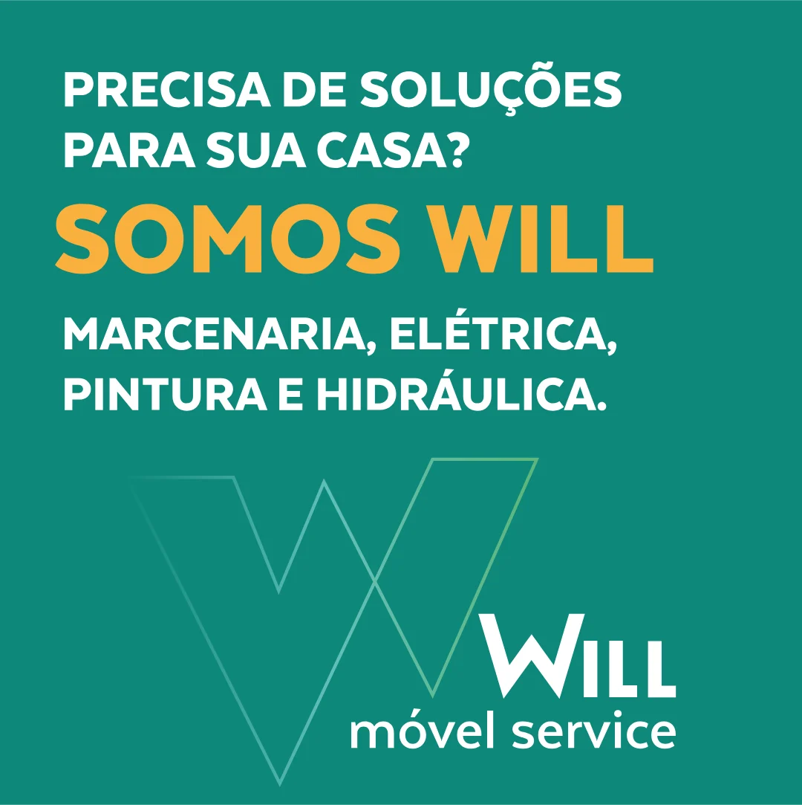

Will Móvel Service
Uma marca para quem resolve. A Will faz marcenaria, elétrica, pintura e hidráulica para residências e empresas em Ribeirão Preto, e precisava de uma identidade que dissesse isso antes de qualquer palavra.
Desafio
A Will nasceu da prestação de serviços e cresceu pela indicação de quem já tinha sido atendido. Faltava uma marca: um nome, uma identidade e um jeito de falar que comunicassem o que ela tem de melhor.
Resolver sem complicação, com preço justo e prazo cumprido, num setor conhecido pela enrolação e pelo prazo indeterminado.
Estratégia
Definimos propósito, posicionamento e as palavras que a marca diz e nunca diz: solução, e não complicação; ágil, e não lento; prazo correto, e não prazo indeterminado.
A Will foi posicionada no arquétipo do Herói, com o Prestativo como complementar: salva o dia a dia quando o móvel quebra, a torneira vaza ou a tomada para, e faz do jeito que o cliente quer.
Um herói sem capa, de uniforme e caixa de ferramentas.
Mapa da marca
A base que orienta o nome, a identidade e cada conversa com o cliente.
Propósito
- Tornar as pessoas felizes, com soluções personalizadas e ágeis em marcenaria e serviços para residências e empresas
Posicionamento
- Solucionadores dinâmicos na construção de móveis e em serviços de manutenção, a preços e prazos justos
Arquétipo
- Herói, que salva o dia a dia
- Prestativo, que escuta e faz do jeito do cliente
Palavras
- Solução, verdade, personalizado, ágil
- Nunca: complicação, enrolação, prazo indeterminado
Tom de voz
- Direto, gentil e sem promessa vazia
Sensorial
- Verde é solução e abertura
- Azul é verdade e credibilidade
- Amarelo só para chamadas
Naming e logo
Criamos o nome Will Móvel Service: Will, curto e fácil de lembrar, e o descritor que diz o que a empresa faz.
Para o logo, exploramos três rotas: uma tipográfica, uma com a casa dentro do W e uma com o W como emblema. A escolhida foi a terceira, refinada até o W cheio em gradiente: o símbolo no peito do herói, que identifica quem chega para resolver.



Logo final
Sistema visual
A paleta nasce das palavras-chave: verde para solução e abertura, azul para verdade e credibilidade, e o amarelo só para chamadas, como preço, prazo e contato. O gradiente Will vai sempre do turquesa ao verde. A tipografia é a Texta.
O sistema se completa com ícones de serviço desenhados dentro de uma casa, porque a Will vai até o cliente, e com o padrão W, o símbolo em linha que vira textura em fundos, uniformes e no veículo.

Aplicações
A marca ganhou corpo nos cartões de visita, nos uniformes com o W nas costas, no veículo todo em petróleo com o padrão W e nas peças para as redes, com chamadas diretas que se apresentam como o cliente gosta de ser atendido: “Prazer, somos Will”.



Peças para as redes sociais
O que entregamos
Do nome ao manual da marca.
Naming
- Criação do nome Will Móvel Service
Estratégia
- Propósito e posicionamento
- Palavras-chave e palavras proibidas
- Sensorial e tom de voz
Logo
- Três rotas exploradas
- Malha de construção
- Versões e usos
Sistema visual
- Gradiente e paleta
- Tipografia Texta
- Ícones e padrão W
Aplicações
- Cartões de visita
- Uniformes
- Veículo
Manual e redes
- Manual da marca
- Peças para redes sociais